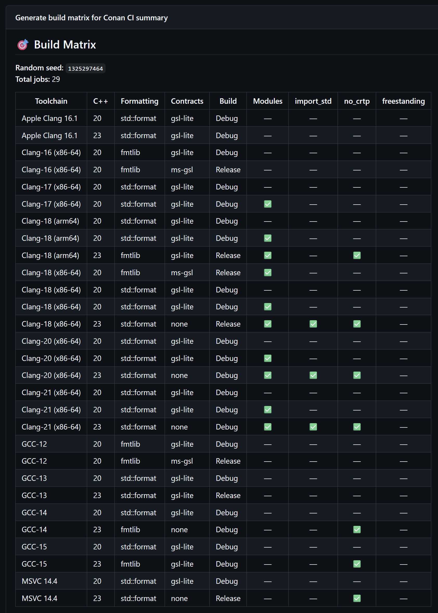
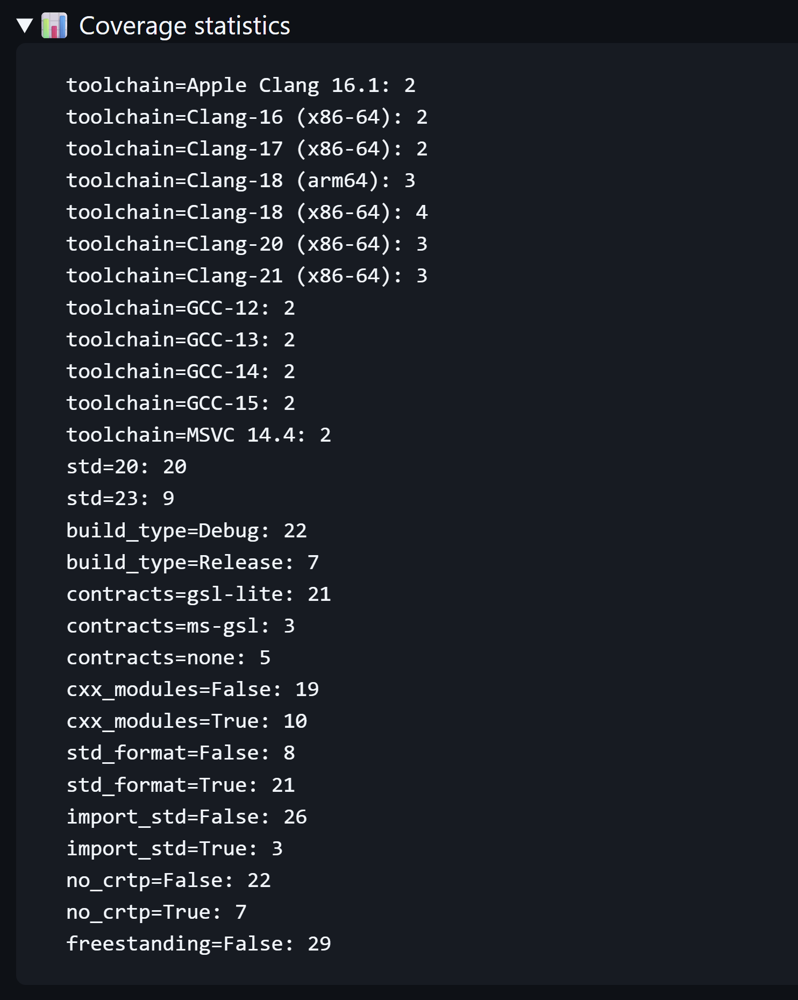
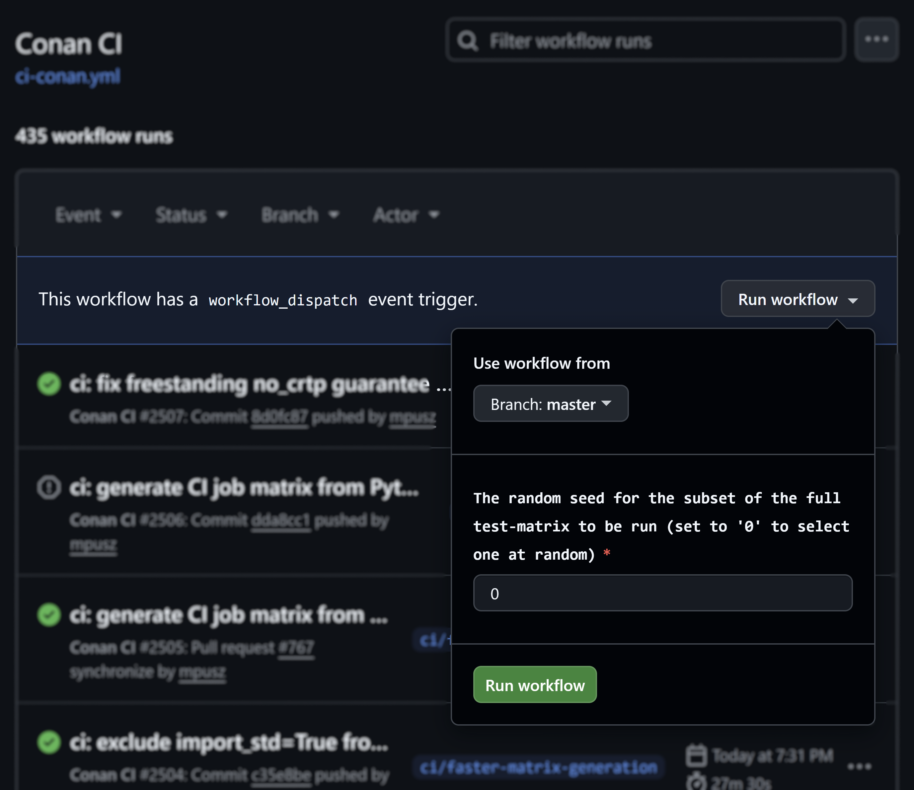

A green master is a promise to your users¶
A stranger found your library. They have not read a line of your code yet. They glance at the CI badge and the date of the last commit, and in about thirty seconds they decide whether the project is alive and safe to depend on. A red badge, or a master branch last touched two years ago, and they leave. You won't hear from them about it.
Part of a series: Why Great C++ Libraries Fail
This post is part of a series based on my using std::cpp 2026 talk on why technically excellent C++ libraries fail to get adopted. It covers the Evaluation stage of the six-stage library journey: do they trust it works? New here? Start with the overview.
One broken build on your main branch reads as "abandoned" or "amateur," and that judgment is made in seconds by people who will never open an issue about it. This stage is about the signals a visitor uses to decide whether to trust the project, and the first of them is that your master branch always works.
Keeping master green¶
A green master is a promise you make to a stranger: this compiles and passes its tests, in environments like yours, and the maintainer keeps it that way on every commit. Portability has to be verified every day, or it rots without anyone noticing.
The hard part is that "environments like yours" is enormous in C++. Your users are spread
across compilers (GCC, Clang, MSVC, Apple Clang), language standards (C++20 and C++23), and
build options: modules or headers, import std or includes, freestanding or hosted, {fmt}
or std::format, one contracts library or another. Every combination is a real user, and
each one catches a different class of bug:
- modules surface a missing
export, import stdsurfaces header and module mixing conflicts,- freestanding surfaces an accidental
#include <iostream>, - the oldest supported compiler surfaces a too-new feature you reached for without noticing.
Testing the full cross-product is hundreds of jobs, which is slow and quick to exhaust your CI quota. So most projects test one or two configurations and hope the rest hold, which they often don't.
Fuzz your build matrix¶
This is the part of mp-units' CI I am most pleased with, because it borrows an idea from fuzzing. Instead of running the entire combination space on every push, the matrix is sampled randomly on each run, with a guarantee that every compiler, every standard, and every option appears at least a couple of times. You get broad coverage over many runs without paying for the full cross-product on any single one.


The matrix is generated by a script,
generate-job-matrix.py,
and the sampling is driven by a seed. The seed is a workflow input (see the matrix-seed
parameter in
ci-conan.yml):
pass a specific seed to reproduce an exact failing configuration, or pass 0 to roll a fresh
matrix and keep exploring the space. The sampling is random but reproducible, so a failing
configuration can be replayed instead of guessed at.

The point is that you don't test everything every time. You explore the configuration space in a way you can repeat, much like property-based testing explores an input space.
Green means more than "it compiled"¶
A trustworthy master is gated in layers, and a change merges only when all of them pass:
- Pre-commit hooks catch formatting before code ever reaches CI.
- The build matrix proves portability across the sampled configurations.
- Quality checks go beyond compiling: warnings as errors,
clang-tidy, the unit tests, and coverage. - Integration tests consume the library the way a user will:
find_package, a Conan package, a documentation build, a freestanding build.
Each layer catches what the others can't. One caveat on sanitizers, since every CI checklist lists them: for a compile-time library like mp-units there is little runtime for ASan or UBSan to find. They earn their place in runtime-heavy code, so I run them where they pay off.
Be the most restrictive user of your own library¶
-Wall is a lower bar than its name suggests. Your users compile your headers under their
flags, not yours, and many run far stricter sets: -Wall -Wextra -Wpedantic, often with
-Wconversion, -Wshadow, or -Wold-style-cast, frequently with -Werror, and on MSVC
with /W4 /permissive-. If your code only compiles clean under -Wall, the first thing
those users see is a wall of warnings from inside your library, on their machine, in their
build. That is a terrible first impression.
The fix is to hold yourself to a stricter standard than any user will reach. Turn on a broad
warning set, treat warnings as errors in CI, and a warning that would have surprised a user
fails your build first instead. mp-units compiles under
a deliberately aggressive set:
-Wall -Wextra -Wpedantic plus -Wconversion, -Wsign-conversion, -Wshadow,
-Wold-style-cast, -Wcast-qual, -Wnull-dereference, and more, with /W4 /permissive-
on MSVC, all as errors. The goal is that no real user ever compiles the library under
stricter settings than I do.
What "all checks passed" says to a stranger¶
When a potential user sees a green check on your latest commit, they read three things from it without consciously noticing: the project is actively maintained, because CI ran on this change; it works in their environment, because their compiler and platform were in the matrix; and it won't quietly break their build, because warnings are treated as errors.
Proving performance¶
CI proves correctness well. Performance is harder, so let me be concrete about what mp-units measures and what it doesn't.
mp-units is a compile-time library, so its runtime promise is a narrow one: zero overhead. The abstraction should compile to exactly the code you would have written by hand, and the proof of that is the generated assembly rather than a benchmark. You drop the code into Compiler Explorer and show the output is identical to the hand-written version, which is deterministic and impossible to fake. Automating that as a CI gate, instead of checking it by eye, is harder than it sounds and is tracked as an open issue (#804). The assembly proof gets its own post later in this series. I don't run runtime micro-benchmarks in CI, and for a library like this that is a deliberate choice rather than a gap: shared runners vary by 10 to 20 percent between identical runs, so a number that noisy isn't evidence. When you do need real runtime figures, measure them where the variance is controlled: on a self-hosted runner, by running the baseline and the change in the same job so the noise cancels, or through a service like CodSpeed, whose instrumentation mode measures C++ on GitHub Actions with variance under one percent.
The performance cost that actually bites a heavy template library is compile time, not
runtime. That is the weak spot here, and the one I don't track rigorously, because it is
genuinely hard to gate. Wall-clock compile time is
as noisy on shared runners as any runtime benchmark, and the machine-independent proxies
(template instantiation counts and binary size) move with every new feature and refactor,
so a fail-on-change gate would fire constantly on a library that is still growing.
CodSpeed, the service above, measures runtime, not compile time, so it doesn't rescue this
either. What works is to treat compile time as something you profile rather than gate: when
a build feels slower, or before a release, run Clang's -ftime-trace through
ClangBuildAnalyzer to find the worst
template instantiation hot spots and fix those. For now that stays a manual discipline.
Branch protection for a solo maintainer¶
Branch protection depends on the size of the project. For a team it is non-negotiable: require reviews and passing CI, and allow no direct pushes to main. For a solo maintainer, opening a pull request to review your own typo fix is mostly ceremony.
I will be plain about my own workflow. I write the large majority of mp-units myself,
and the workflow splits by the size of the change. Anything substantial goes through a
pull request, where the full CI matrix runs before anything merges. Simple, low-risk
changes go straight to master after a local mirror of the CI matrix,
check_all.sh,
plus pre-commit hooks for formatting. Either way the principle is the same: "master is
always green."
One part of branch protection isn't a choice a solo maintainer gets to make. GitHub does not let you approve your own pull request, so "require one approving review" is a rule I can't satisfy rather than one I am skipping: switch it on alone and every change has to land through an admin override. What a solo maintainer can require is passing CI, and that is the part worth enforcing. The review requirement becomes useful when a second regular contributor arrives, and that is when to turn it on.
That same solo reality is where mp-units is weakest at this stage. The gap isn't the automated gate, which runs on the pull request either way, but human review. With no second pair of eyes on most changes, a design mistake a reviewer would have questioned lands on master unchallenged, and the bus factor is low. The review process today is mostly just me, and that is a real limit.
These tips come from my conference talk on why technically excellent C++ libraries fail to get adopted, and how to fix it. You can watch the recording, which won best talk at using std::cpp 2026, and read the slides. I am giving an updated version of it at CppCon 2026, and the full, extended two-hour keynote at Meeting C++ 2026.